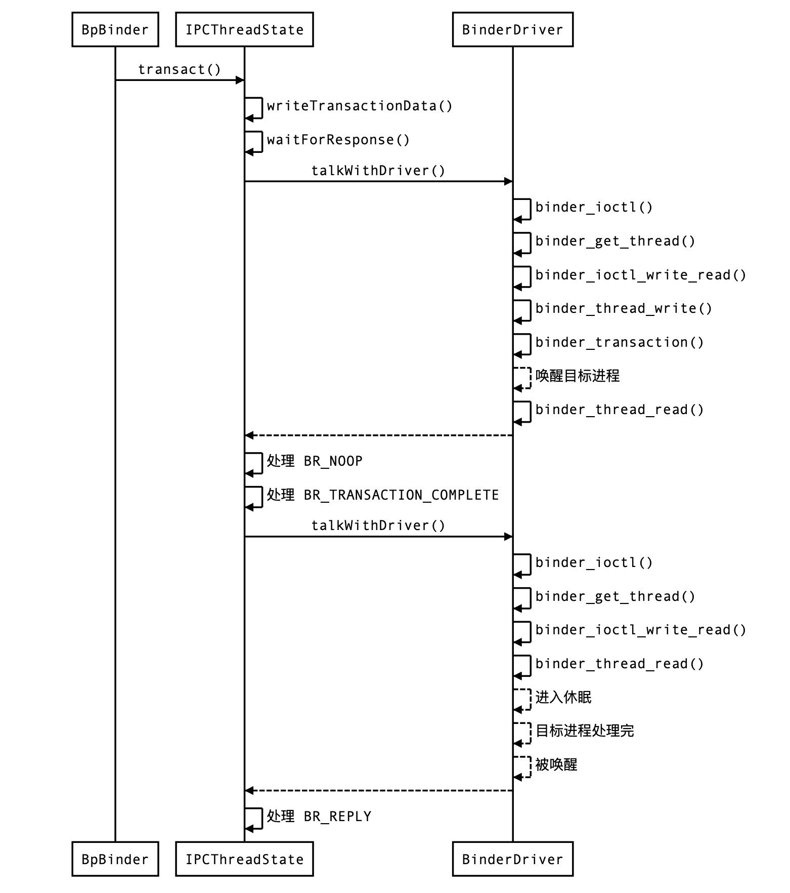
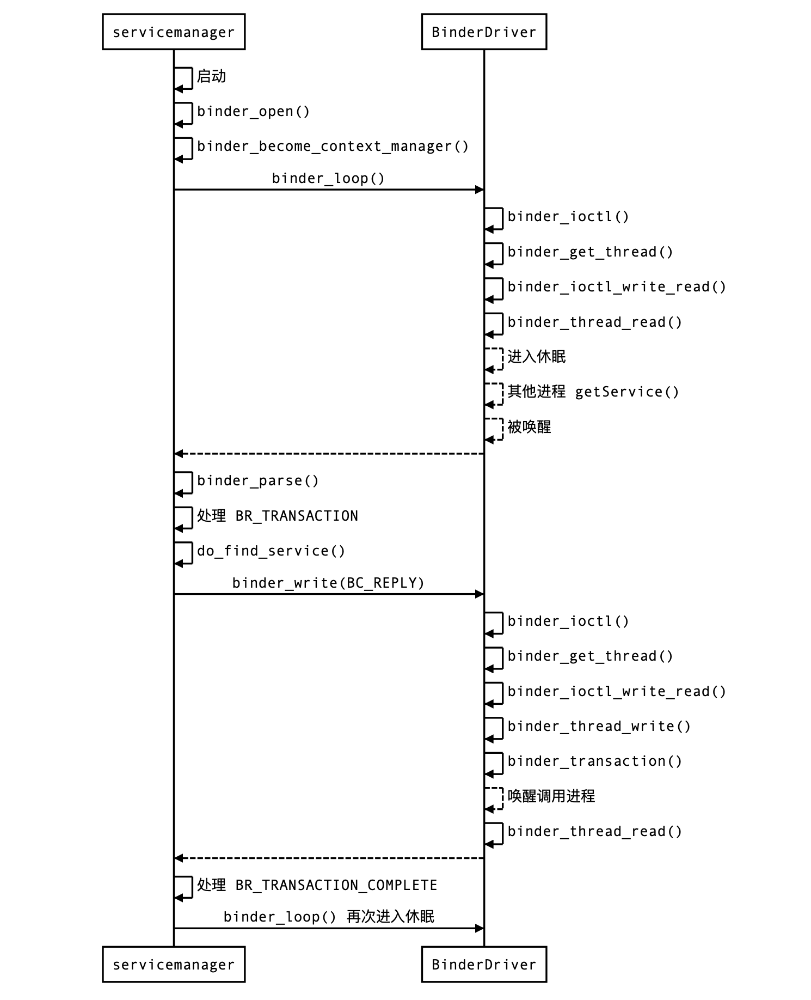
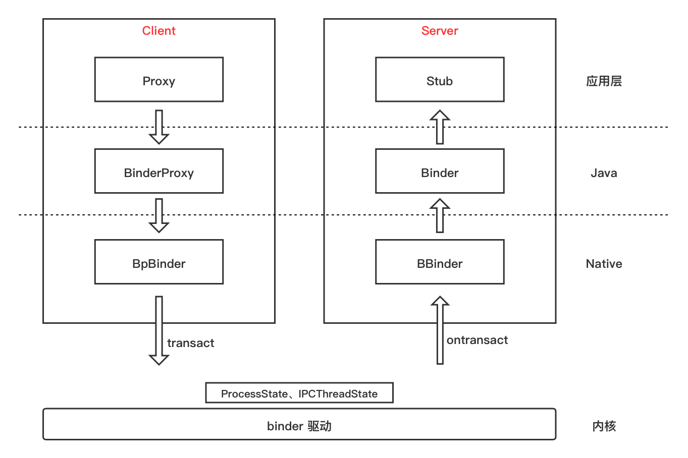

<!DOCTYPE html>
<html>
<head><meta name="generator" content="Hexo 3.9.0">
  <meta charset="utf-8">
  
  <title>细读《深入理解 Android 内核设计思想》（五）Binder 机制 [下] | what is your main focus for today?</title>
  <meta name="viewport" content="width=device-width, initial-scale=1, maximum-scale=1">
  <meta name="description" content="对冗余挑拣重点，对重点深入补充，输出结构清晰的精简版">
<meta name="keywords" content="读书笔记,binder">
<meta property="og:type" content="article">
<meta property="og:title" content="细读《深入理解 Android 内核设计思想》（五）Binder 机制 [下]">
<meta property="og:url" content="http://yhaowa.gitee.io/c74cb1a3/index.html">
<meta property="og:site_name" content="what is your main focus for today?">
<meta property="og:description" content="对冗余挑拣重点，对重点深入补充，输出结构清晰的精简版">
<meta property="og:locale" content="zh-CN">
<meta property="og:image" content="http://yhaowa.gitee.io/img/binderDriver.png">
<meta property="og:image" content="http://yhaowa.gitee.io/img/serviceManagerBinder.png">
<meta property="og:image" content="http://yhaowa.gitee.io/img/binder_design.jpg">
<meta property="og:updated_time" content="2020-12-06T07:16:30.623Z">
<meta name="twitter:card" content="summary">
<meta name="twitter:title" content="细读《深入理解 Android 内核设计思想》（五）Binder 机制 [下]">
<meta name="twitter:description" content="对冗余挑拣重点，对重点深入补充，输出结构清晰的精简版">
<meta name="twitter:image" content="http://yhaowa.gitee.io/img/binderDriver.png">
  
    <link rel="alternative" href="/atom.xml" title="what is your main focus for today?" type="application/atom+xml">
  
  
    <link rel="icon" href="/favicon.png">
  
  <link rel="stylesheet" href="/css/style.css">
  <!--[if lt IE 9]><script src="//cdnjs.cloudflare.com/ajax/libs/html5shiv/3.7/html5shiv.min.js"></script><![endif]-->
  
</head></html>
<body>
<div id="container">
  <div id="wrap">
    <header id="header">
  <div id="banner"></div>
  <div id="header-outer" class="outer">
    <div id="header-title" class="inner">
      <h1 id="logo-wrap">
        <a href="/" id="logo">what is your main focus for today?</a>
      </h1>
      
    </div>
    <div id="header-inner" class="inner">
      <nav id="main-nav">
        <a id="main-nav-toggle" class="nav-icon"></a>
        
          <a class="main-nav-link" href="/">首页</a>
        
          <a class="main-nav-link" href="/archives">归档</a>
        
      </nav>
      <nav id="sub-nav">
        
          <a id="nav-rss-link" class="nav-icon" href="/atom.xml" title="RSS Feed"></a>
        
        <a id="nav-search-btn" class="nav-icon" title="Search"></a>
      </nav>
      <div id="search-form-wrap">
        <form action="//www.baidu.com/baidu" method="get" accept-charset="utf-8" class="search-form">
          <input type="search" name="word" maxlength="20" class="search-form-input" placeholder="Search">
          <input type="submit" value="" class="search-form-submit">
          <input name=tn type=hidden value="bds">
          <input name=cl type=hidden value="3">
          <input name=ct type=hidden value="2097152">
          <input type="hidden" name="si" value="yhaowa.gitee.io">
        </form>
      </div>
    </div>
  </div>
</header>
    <div class="outer">
      <section id="main"><article id="post-细读《深入理解-Android-内核设计思想》（五）Binder-机制-下" class="article article-type-post" itemscope itemprop="blogPost">
  <div class="article-meta">
    <a href="/c74cb1a3/" class="article-date">
  <time datetime="2020-05-03T02:02:35.000Z" itemprop="datePublished">2020-05-03</time>
</a>
    
  <div class="article-category">
    <a class="article-category-link" href="/categories/Framework/">Framework</a>
  </div>

  </div>
  <div class="article-inner">
    
    
      <header class="article-header">
        
  
    <h1 class="article-title" itemprop="name">
      细读《深入理解 Android 内核设计思想》（五）Binder 机制 [下]
    </h1>
  

      </header>
    
    <div class="article-entry" itemprop="articleBody">
      
        <p><em>对冗余挑拣重点，对重点深入补充，输出结构清晰的精简版</em><br><a id="more"></a></p>
<blockquote>
<ol>
<li>深入 binder 驱动内部<ol>
<li>binder_ioctl</li>
<li>binder_get_thread</li>
<li>binder_ioctl_write_read</li>
<li>binder_thread_write</li>
<li>binder_transaction</li>
<li>binder_thread_read</li>
<li>小结</li>
</ol>
</li>
<li>binder Q&amp;A<ol>
<li>如何找到目标进程 Binder 实体</li>
<li>如何实现 Binder 线程的睡眠与唤醒</li>
</ol>
</li>
<li>最后</li>
</ol>
</blockquote>
<h2 id="深入-binder-驱动内部"><a href="#深入-binder-驱动内部" class="headerlink" title="深入 binder 驱动内部"></a>深入 binder 驱动内部</h2><p>前两篇文章都有提到 binder_ioctl 方法，在 <a href="https://yhaowa.gitee.io/a7541469/">Binder 机制 [上]</a>  中介绍了 binder_ioctl 支持的命令；<a href="https://yhaowa.gitee.io/a7541469/">Binder 机制 [中]</a>  中提到 IPCThreadState 会调用到 binder_ioctl 方法。</p>
<p>书中对 binder 驱动内部调用的讲解没有分为较清晰的步骤，一口气就是 20 页篇幅的源码详解，理解起来有些难度，容易迷失。在细读了三四遍后，终于感觉对整体有些掌握了，结合前面的学习与自己的理解，将一次 IPC 调用中 binder 驱动的工作分为以下 5 步：</p>
<p><strong>1.准备数据，根据命令分发给具体的方法去处理<br>2.找到目标进程的相关信息<br>3.将数据一次拷贝到目标进程所映射的物理内存块<br>4.记录待处理的任务，唤醒目标线程<br>5.调用线程进入休眠<br>6.目标进程直接拿到数据进行处理，处理完后唤醒调用线程<br>7.调用线程返回处理结果</strong></p>
<p>与上篇文章一样仍以 getService() 为例，按照上面的工作步骤为脉络，深入分析驱动层中的执行逻辑，彻底搞定 binder 驱动！</p>
<h3 id="binder-ioctl"><a href="#binder-ioctl" class="headerlink" title="binder_ioctl"></a>binder_ioctl</h3><p>在 IPCThreadState 中这样调用了 binder_ioctl() 方法：<br><figure class="highlight objectivec"><table><tr><td class="gutter"><pre><span class="line">1</span><br></pre></td><td class="code"><pre><span class="line">ioctl(mProcess-&gt;mDriverFD, BINDER_WRITE_READ, &amp;bwr)</span><br></pre></td></tr></table></figure></p>
<p>binder_ioctl() 方法中会根据 BINDER_WRITE_READ、BINDER_SET_MAX_THREADS 等不同 cmd 转调到不同的方法去执行，这里我们只关注 BINDER_WRITE_READ，简化后代码如下：</p>
<figure class="highlight objectivec"><table><tr><td class="gutter"><pre><span class="line">1</span><br><span class="line">2</span><br><span class="line">3</span><br><span class="line">4</span><br><span class="line">5</span><br><span class="line">6</span><br><span class="line">7</span><br><span class="line">8</span><br><span class="line">9</span><br><span class="line">10</span><br><span class="line">11</span><br><span class="line">12</span><br><span class="line">13</span><br><span class="line">14</span><br><span class="line">15</span><br><span class="line">16</span><br><span class="line">17</span><br><span class="line">18</span><br><span class="line">19</span><br><span class="line">20</span><br><span class="line">21</span><br></pre></td><td class="code"><pre><span class="line"><span class="keyword">static</span> <span class="keyword">long</span> binder_ioctl(<span class="keyword">struct</span> file *filp, <span class="keyword">unsigned</span> <span class="keyword">int</span> cmd, <span class="keyword">unsigned</span> <span class="keyword">long</span> arg)&#123;</span><br><span class="line">    <span class="keyword">int</span> ret;</span><br><span class="line">    <span class="comment">//拿到调用进程在 binder_open() 中记录的 binder_proc</span></span><br><span class="line">    <span class="keyword">struct</span> binder_proc *proc = filp-&gt;private_data;</span><br><span class="line">    <span class="keyword">struct</span> binder_thread *thread;</span><br><span class="line">    binder_lock(__func__);</span><br><span class="line">    <span class="comment">//获取调用线程 binder_thread</span></span><br><span class="line">    thread = binder_get_thread(proc);</span><br><span class="line">    <span class="keyword">switch</span> (cmd) &#123;</span><br><span class="line">    <span class="keyword">case</span> BINDER_WRITE_READ:</span><br><span class="line">        <span class="comment">//处理 binder 数据读写,binder IPC 通信的核心逻辑</span></span><br><span class="line">    	ret = binder_ioctl_write_read(filp, cmd, arg, thread);</span><br><span class="line">    	<span class="keyword">if</span> (ret)</span><br><span class="line">    		<span class="keyword">goto</span> err;</span><br><span class="line">    	<span class="keyword">break</span>;</span><br><span class="line">    <span class="keyword">case</span> BINDER_SET_MAX_THREADS:&#123;...&#125; <span class="comment">//设置 binder 最大线程数</span></span><br><span class="line">    <span class="keyword">case</span> BINDER_SET_CONTEXT_MGR:&#123;...&#125; <span class="comment">//设置 service 大管家，即 ServiceManager</span></span><br><span class="line">    <span class="keyword">case</span> BINDER_THREAD_EXIT:&#123;...&#125; <span class="comment">//binder 线程退出命令，释放相关资源</span></span><br><span class="line">    <span class="keyword">case</span> BINDER_VERSION: &#123;...&#125; <span class="comment">//获取 binder 驱动版本号</span></span><br><span class="line">    ...</span><br><span class="line">&#125;</span><br></pre></td></tr></table></figure>
<p>在 <a href="https://yhaowa.gitee.io/a7541469/">Binder 机制 [上]</a> 中详细介绍过 binder_open() 方法，它主要做了两个工作：1.创建及初始化每个进程独有一份的、用来存放 binder 相关数据的 binder_proc 结构体，2.<strong>将 binder_proc 记录起来，方便后续使用</strong>。正是通过 file 来记录的：<br><figure class="highlight objectivec"><table><tr><td class="gutter"><pre><span class="line">1</span><br><span class="line">2</span><br><span class="line">3</span><br><span class="line">4</span><br><span class="line">5</span><br></pre></td><td class="code"><pre><span class="line"><span class="keyword">static</span> <span class="keyword">int</span> binder_open(<span class="keyword">struct</span> inode *nodp, <span class="keyword">struct</span> file *filp)&#123;</span><br><span class="line">    ...</span><br><span class="line">    filp-&gt;private_data = proc;</span><br><span class="line">    ...</span><br><span class="line">&#125;</span><br></pre></td></tr></table></figure></p>
<p>拿到调用进程后，进一步通过 binder_get_thread() 方法拿到调用线程，然后就交给 binder_ioctl_write_read() 方法去执行具体的 binder 数据读写了，可见 binder_ioctl() 方法本身的逻辑非常简单，将数据 arg 透传了出去。下面分别来看 binder_get_thread()、binder_ioctl_write_read() 这两个方法。</p>
<h3 id="binder-get-thread"><a href="#binder-get-thread" class="headerlink" title="binder_get_thread"></a>binder_get_thread</h3><figure class="highlight objectivec"><table><tr><td class="gutter"><pre><span class="line">1</span><br><span class="line">2</span><br><span class="line">3</span><br><span class="line">4</span><br><span class="line">5</span><br><span class="line">6</span><br><span class="line">7</span><br><span class="line">8</span><br><span class="line">9</span><br><span class="line">10</span><br><span class="line">11</span><br><span class="line">12</span><br><span class="line">13</span><br><span class="line">14</span><br><span class="line">15</span><br><span class="line">16</span><br><span class="line">17</span><br><span class="line">18</span><br><span class="line">19</span><br><span class="line">20</span><br><span class="line">21</span><br><span class="line">22</span><br><span class="line">23</span><br><span class="line">24</span><br><span class="line">25</span><br><span class="line">26</span><br><span class="line">27</span><br><span class="line">28</span><br><span class="line">29</span><br><span class="line">30</span><br><span class="line">31</span><br><span class="line">32</span><br></pre></td><td class="code"><pre><span class="line"><span class="keyword">static</span> <span class="keyword">struct</span> binder_thread *binder_get_thread(<span class="keyword">struct</span> binder_proc *proc)&#123;</span><br><span class="line">    <span class="keyword">struct</span> binder_thread *thread = <span class="literal">NULL</span>;</span><br><span class="line">    <span class="keyword">struct</span> rb_node *parent = <span class="literal">NULL</span>;</span><br><span class="line">    <span class="keyword">struct</span> rb_node **p = &amp;proc-&gt;threads.rb_node; <span class="comment">//从 proc 中获取红黑树根节点</span></span><br><span class="line">    <span class="comment">//查找 pid 等于当前线程 id 的thread，该红黑树以 pid 大小为序存放</span></span><br><span class="line">    <span class="keyword">while</span> (*p) &#123;</span><br><span class="line">        parent = *p;</span><br><span class="line">        thread = rb_entry(parent, <span class="keyword">struct</span> binder_thread, rb_node);</span><br><span class="line">        <span class="keyword">if</span> (current-&gt;pid &lt; thread-&gt;pid) <span class="comment">//current-&gt;pid 是当前调用线程的 id</span></span><br><span class="line">            p = &amp;(*p)-&gt;rb_left;</span><br><span class="line">        <span class="keyword">else</span> <span class="keyword">if</span> (current-&gt;pid &gt; thread-&gt;pid)</span><br><span class="line">            p = &amp;(*p)-&gt;rb_right;</span><br><span class="line">        <span class="keyword">else</span></span><br><span class="line">            <span class="keyword">break</span>;</span><br><span class="line">    &#125;</span><br><span class="line">    <span class="keyword">if</span> (*p == <span class="literal">NULL</span>) &#123;<span class="comment">//如果没有找到，则新创建一个</span></span><br><span class="line">        thread = kzalloc(<span class="keyword">sizeof</span>(*thread), GFP_KERNEL);</span><br><span class="line">        <span class="keyword">if</span> (thread == <span class="literal">NULL</span>)</span><br><span class="line">            <span class="keyword">return</span> <span class="literal">NULL</span>;</span><br><span class="line">        binder_stats_created(BINDER_STAT_THREAD);</span><br><span class="line">        thread-&gt;proc = proc;</span><br><span class="line">        thread-&gt;pid = current-&gt;pid;</span><br><span class="line">        init_waitqueue_head(&amp;thread-&gt;wait);    <span class="comment">//初始化等待队列</span></span><br><span class="line">        INIT_LIST_HEAD(&amp;thread-&gt;todo);       <span class="comment">//初始化待处理队列</span></span><br><span class="line">        rb_link_node(&amp;thread-&gt;rb_node, parent, p);  <span class="comment">//加入到 proc 的 threads 红黑树中</span></span><br><span class="line">        rb_insert_color(&amp;thread-&gt;rb_node, &amp;proc-&gt;threads);</span><br><span class="line">        thread-&gt;looper |= BINDER_LOOPER_STATE_NEED_RETURN;</span><br><span class="line">        thread-&gt;return_error = BR_OK;</span><br><span class="line">        thread-&gt;return_error2 = BR_OK;</span><br><span class="line">    &#125;</span><br><span class="line">    <span class="keyword">return</span> thread;</span><br><span class="line">&#125;</span><br></pre></td></tr></table></figure>
<p>binder_thread 是用来描述线程的结构体，binder_get_thread() 方法中逻辑也很简单，首先从调用进程 proc 中查找当前线程是否已被记录，如果找到就直接返回，否则新建一个返回，并记录到 proc 中。也就是说所有调用 binder_ioctl() 的线程，都会被记录起来。</p>
<h3 id="binder-ioctl-write-read"><a href="#binder-ioctl-write-read" class="headerlink" title="binder_ioctl_write_read"></a>binder_ioctl_write_read</h3><p>此方法分为两部分来看，首先是整体：<br><figure class="highlight objectivec"><table><tr><td class="gutter"><pre><span class="line">1</span><br><span class="line">2</span><br><span class="line">3</span><br><span class="line">4</span><br><span class="line">5</span><br><span class="line">6</span><br><span class="line">7</span><br><span class="line">8</span><br><span class="line">9</span><br><span class="line">10</span><br><span class="line">11</span><br><span class="line">12</span><br><span class="line">13</span><br><span class="line">14</span><br><span class="line">15</span><br><span class="line">16</span><br><span class="line">17</span><br><span class="line">18</span><br><span class="line">19</span><br><span class="line">20</span><br><span class="line">21</span><br><span class="line">22</span><br></pre></td><td class="code"><pre><span class="line"><span class="keyword">static</span> <span class="keyword">int</span> binder_ioctl_write_read(<span class="keyword">struct</span> file *filp,</span><br><span class="line">				<span class="keyword">unsigned</span> <span class="keyword">int</span> cmd, <span class="keyword">unsigned</span> <span class="keyword">long</span> arg,</span><br><span class="line">				<span class="keyword">struct</span> binder_thread *thread)&#123;</span><br><span class="line">    <span class="keyword">int</span> ret = <span class="number">0</span>;</span><br><span class="line">    <span class="keyword">struct</span> binder_proc *proc = filp-&gt;private_data;</span><br><span class="line">    <span class="keyword">unsigned</span> <span class="keyword">int</span> size = _IOC_SIZE(cmd);</span><br><span class="line">    <span class="keyword">void</span> __user *ubuf = (<span class="keyword">void</span> __user *)arg; <span class="comment">//用户传下来的数据赋值给 ubuf</span></span><br><span class="line">    <span class="keyword">struct</span> binder_write_read bwr;</span><br><span class="line">    <span class="comment">//把用户空间数据 ubuf 拷贝到 bwr</span></span><br><span class="line">    <span class="keyword">if</span> (copy_from_user(&amp;bwr, ubuf, <span class="keyword">sizeof</span>(bwr))) &#123;</span><br><span class="line">    	ret = -EFAULT;</span><br><span class="line">    	<span class="keyword">goto</span> <span class="keyword">out</span>;</span><br><span class="line">    &#125;</span><br><span class="line">    处理数据...</span><br><span class="line">    <span class="comment">//将读写后的数据写回给用户空间</span></span><br><span class="line">    <span class="keyword">if</span> (copy_to_user(ubuf, &amp;bwr, <span class="keyword">sizeof</span>(bwr))) &#123;</span><br><span class="line">    	ret = -EFAULT;</span><br><span class="line">    	<span class="keyword">goto</span> <span class="keyword">out</span>;</span><br><span class="line">    &#125;</span><br><span class="line"><span class="keyword">out</span>:</span><br><span class="line">	<span class="keyword">return</span> ret;</span><br><span class="line">&#125;</span><br></pre></td></tr></table></figure></p>
<p>起初看到 copy_from_user() 方法时难以理解，因为它看起来是将我们要传输的数据拷贝到内核空间了，但目前还没有看到 server 端的任何线索，bwr 跟 server 端没有映射关系，那后续再将 bwr 传输给 server 端的时候又要拷贝，这样岂不是多次拷贝了？</p>
<p>其实这里的 copy_from_user() 方法并没有拷贝要传输的数据，而仅是拷贝了持有传输数据内存地址的 bwr。后续处理数据时会根据 bwr 信息真正的去拷贝要传输的数据。</p>
<p>处理完数据后，会将处理结果体现在 bwr 中，然后返回给用户空间处理。那是如何处理数据的呢？所谓的处理数据，就是对数据的读写而已：</p>
<figure class="highlight objectivec"><table><tr><td class="gutter"><pre><span class="line">1</span><br><span class="line">2</span><br><span class="line">3</span><br><span class="line">4</span><br><span class="line">5</span><br><span class="line">6</span><br><span class="line">7</span><br><span class="line">8</span><br><span class="line">9</span><br><span class="line">10</span><br><span class="line">11</span><br><span class="line">12</span><br><span class="line">13</span><br><span class="line">14</span><br><span class="line">15</span><br><span class="line">16</span><br><span class="line">17</span><br><span class="line">18</span><br><span class="line">19</span><br><span class="line">20</span><br><span class="line">21</span><br><span class="line">22</span><br><span class="line">23</span><br><span class="line">24</span><br><span class="line">25</span><br><span class="line">26</span><br><span class="line">27</span><br></pre></td><td class="code"><pre><span class="line"><span class="keyword">if</span> (bwr.write_size &gt; <span class="number">0</span>) &#123;<span class="comment">//写数据</span></span><br><span class="line">	ret = binder_thread_write(proc, </span><br><span class="line">         thread,</span><br><span class="line">         bwr.write_buffer, bwr.write_size,</span><br><span class="line">         &amp;bwr.write_consumed);</span><br><span class="line">    trace_binder_write_done(ret);</span><br><span class="line">    <span class="keyword">if</span> (ret &lt; <span class="number">0</span>) &#123; <span class="comment">//写失败</span></span><br><span class="line">        bwr.read_consumed = <span class="number">0</span>;</span><br><span class="line">        <span class="keyword">if</span> (copy_to_user(ubuf, &amp;bwr, <span class="keyword">sizeof</span>(bwr)))</span><br><span class="line">            ret = -EFAULT;</span><br><span class="line">        <span class="keyword">goto</span> <span class="keyword">out</span>;</span><br><span class="line">    &#125;</span><br><span class="line">&#125;</span><br><span class="line"><span class="keyword">if</span> (bwr.read_size &gt; <span class="number">0</span>) &#123;<span class="comment">//读数据</span></span><br><span class="line">	ret = binder_thread_read(proc, thread, bwr.read_buffer,</span><br><span class="line">        bwr.read_size,</span><br><span class="line">        &amp;bwr.read_consumed,</span><br><span class="line">        filp-&gt;f_flags &amp; O_NONBLOCK);</span><br><span class="line">    trace_binder_read_done(ret);</span><br><span class="line">    <span class="keyword">if</span> (!list_empty(&amp;proc-&gt;todo))</span><br><span class="line">        wake_up_interruptible(&amp;proc-&gt;wait);<span class="comment">//唤醒等待状态的线程</span></span><br><span class="line">    <span class="keyword">if</span> (ret &lt; <span class="number">0</span>) &#123; <span class="comment">//读失败</span></span><br><span class="line">        <span class="keyword">if</span> (copy_to_user(ubuf, &amp;bwr, <span class="keyword">sizeof</span>(bwr)))</span><br><span class="line">            ret = -EFAULT;</span><br><span class="line">        <span class="keyword">goto</span> <span class="keyword">out</span>;</span><br><span class="line">    &#125;</span><br><span class="line">&#125;</span><br></pre></td></tr></table></figure>
<p>可见 binder 驱动内部依赖用户空间的 binder_write_read 决定是要读取还是写入数据：其内部变量 read_size&gt;0 则代表要读取数据，write_size&gt;0 代表要写入数据，若都大于 0 则先写入，后读取。</p>
<p>至此焦点应该集中在 binder_thread_write() 和 binder_thread_read()，下面分析这两个方法。</p>
<h3 id="binder-thread-write"><a href="#binder-thread-write" class="headerlink" title="binder_thread_write"></a>binder_thread_write</h3><p>在上面的 binder_ioctl_write_read() 方法中调用 binder_thread_write() 时传入了 bwr.write_buffer、bwr.write_size 等，先搞清楚这些参数是什么。</p>
<p>最开始是在用户空间 IPCThreadState 的 transact() 中通过 writeTransactionData() 方法创建数据并写入 mOut 的，writeTransactionData 方法代码如下：</p>
<figure class="highlight objectivec"><table><tr><td class="gutter"><pre><span class="line">1</span><br><span class="line">2</span><br><span class="line">3</span><br><span class="line">4</span><br><span class="line">5</span><br><span class="line">6</span><br><span class="line">7</span><br><span class="line">8</span><br><span class="line">9</span><br><span class="line">10</span><br><span class="line">11</span><br><span class="line">12</span><br><span class="line">13</span><br><span class="line">14</span><br><span class="line">15</span><br><span class="line">16</span><br><span class="line">17</span><br><span class="line">18</span><br><span class="line">19</span><br><span class="line">20</span><br><span class="line">21</span><br></pre></td><td class="code"><pre><span class="line">status_t IPCThreadState::writeTransactionData(int32_t cmd, uint32_t binderFlags,</span><br><span class="line">    int32_t handle, uint32_t code, <span class="keyword">const</span> Parcel&amp; data, status_t* statusBuffer)&#123;</span><br><span class="line">    binder_transaction_data tr; <span class="comment">//到驱动内部后会取出此结构体进行处理</span></span><br><span class="line">    tr.target.ptr = <span class="number">0</span>;</span><br><span class="line">    tr.target.handle = handle; <span class="comment">//目标 server 的 binder 的句柄</span></span><br><span class="line">    tr.code = code; <span class="comment">//请求码，getService() 服务对应的是 GET_SERVICE_TRANSACTION</span></span><br><span class="line">    tr.flags = binderFlags;</span><br><span class="line">    tr.cookie = <span class="number">0</span>;</span><br><span class="line">    tr.sender_pid = <span class="number">0</span>;</span><br><span class="line">    tr.sender_euid = <span class="number">0</span>;</span><br><span class="line">    <span class="keyword">const</span> status_t err = data.errorCheck(); <span class="comment">//验证数据合理性</span></span><br><span class="line">    <span class="keyword">if</span> (err == NO_ERROR) &#123;</span><br><span class="line">        tr.data_size = data.ipcDataSize(); <span class="comment">//传输数据大小</span></span><br><span class="line">        tr.data.ptr.buffer = data.ipcData(); <span class="comment">//传输数据</span></span><br><span class="line">        tr.offsets_size = data.ipcObjectsCount()*<span class="keyword">sizeof</span>(binder_size_t);</span><br><span class="line">        tr.data.ptr.offsets = data.ipcObjects();</span><br><span class="line">    &#125; <span class="keyword">else</span> &#123;...&#125;</span><br><span class="line">    mOut.writeInt32(cmd); <span class="comment">// transact 传入的 cmd 是 BC_TRANSACTION</span></span><br><span class="line">    mOut.write(&amp;tr, <span class="keyword">sizeof</span>(tr)); <span class="comment">//打包成 binder_transaction_data</span></span><br><span class="line">    <span class="keyword">return</span> NO_ERROR;</span><br><span class="line">&#125;</span><br></pre></td></tr></table></figure>
<p>然后在 IPCThreadState 的 talkWithDriver() 方法中对 write_buffer 赋值：<br><figure class="highlight objectivec"><table><tr><td class="gutter"><pre><span class="line">1</span><br></pre></td><td class="code"><pre><span class="line">bwr.write_buffer = (uintptr_t)mOut.data();</span><br></pre></td></tr></table></figure></p>
<p>搞清楚了数据的来源，再来看 binder_thread_write() 方法，binder_thread_write() 方法中处理了大量的 BC_XXX 命令，代码很长，这里我们只关注当前正在处理的 BC_TRANSACTION 命令，简化后代码如下：<br><figure class="highlight objectivec"><table><tr><td class="gutter"><pre><span class="line">1</span><br><span class="line">2</span><br><span class="line">3</span><br><span class="line">4</span><br><span class="line">5</span><br><span class="line">6</span><br><span class="line">7</span><br><span class="line">8</span><br><span class="line">9</span><br><span class="line">10</span><br><span class="line">11</span><br><span class="line">12</span><br><span class="line">13</span><br><span class="line">14</span><br><span class="line">15</span><br><span class="line">16</span><br><span class="line">17</span><br><span class="line">18</span><br><span class="line">19</span><br><span class="line">20</span><br><span class="line">21</span><br><span class="line">22</span><br><span class="line">23</span><br><span class="line">24</span><br><span class="line">25</span><br></pre></td><td class="code"><pre><span class="line"><span class="keyword">static</span> <span class="keyword">int</span> binder_thread_write(<span class="keyword">struct</span> binder_proc *proc,</span><br><span class="line">        <span class="keyword">struct</span> binder_thread *thread,</span><br><span class="line">        binder_uintptr_t binder_buffer, size_t size,</span><br><span class="line">        binder_size_t *consumed)&#123;</span><br><span class="line">    uint32_t cmd;</span><br><span class="line">    <span class="keyword">void</span> __user *buffer = (<span class="keyword">void</span> __user *)(uintptr_t)binder_buffer; <span class="comment">//就是 bwr.write_buffer</span></span><br><span class="line">    <span class="keyword">void</span> __user *ptr = buffer + *consumed; <span class="comment">//数据起始地址</span></span><br><span class="line">    <span class="keyword">void</span> __user *end = buffer + size; <span class="comment">//数据结束地址</span></span><br><span class="line">    <span class="keyword">while</span> (ptr &lt; end &amp;&amp; thread-&gt;return_error == BR_OK) &#123; <span class="comment">//可能有多个命令及对应数据要处理，所以要循环</span></span><br><span class="line">        <span class="keyword">if</span> (get_user(cmd, (uint32_t __user *)ptr)) <span class="comment">// 读取一个 cmd</span></span><br><span class="line">            <span class="keyword">return</span> -EFAULT;</span><br><span class="line">        ptr += <span class="keyword">sizeof</span>(uint32_t); <span class="comment">//跳过 cmd 所占的空间，指向要处理的数据</span></span><br><span class="line">        <span class="keyword">switch</span> (cmd) &#123;</span><br><span class="line">            <span class="keyword">case</span> BC_TRANSACTION:</span><br><span class="line">            <span class="keyword">case</span> BC_REPLY: &#123;</span><br><span class="line">                 <span class="keyword">struct</span> binder_transaction_data tr; <span class="comment">//与 writeTransactionData 中准备的数据结构体对应</span></span><br><span class="line">                 <span class="keyword">if</span> (copy_from_user(&amp;tr, ptr, <span class="keyword">sizeof</span>(tr))) <span class="comment">//拷贝到内核空间 tr 中</span></span><br><span class="line">                    <span class="keyword">return</span> -EFAULT;</span><br><span class="line">                 ptr += <span class="keyword">sizeof</span>(tr); <span class="comment">//跳过数据所占空间，指向下一个 cmd</span></span><br><span class="line">                 binder_transaction(proc, thread, &amp;tr, cmd == BC_REPLY); <span class="comment">//处理数据</span></span><br><span class="line">                 <span class="keyword">break</span>;</span><br><span class="line">            &#125;</span><br><span class="line">            处理其他 BC_XX 命令...</span><br><span class="line">        &#125;</span><br><span class="line">    *consumed = ptr - buffer; <span class="comment">//被写入处理消耗的数据量，对应于用户空间的 bwr.write_consumed</span></span><br></pre></td></tr></table></figure></p>
<p>binder_thread_write() 中从 bwr.write_buffer 中取出了 cmd 和 cmd 对应的数据，进一步交给 binder_transaction() 处理，需要注意的是，BC_TRANSACTION、BC_REPLY 这两个命令都是由 binder_transaction() 处理的。</p>
<p>简单梳理一下，由 binder_ioctl -&gt; binder_ioctl_write_read -&gt; binder_thread_write ，到目前为止还只是在准备数据，没有看到跟目标进程相关的任何处理，都属于 “准备数据，根据命令分发给具体的方法去处理” 第 1 个工作。而到此为止，第 1 个工作便结束，下一步的 binder_transaction() 方法终于要开始后面的工作了。</p>
<h3 id="binder-transaction"><a href="#binder-transaction" class="headerlink" title="binder_transaction"></a>binder_transaction</h3><p>binder_transaction() 方法中代码较长，先总结它干了哪些事：对应开头列出的工作，此方法中做了非常关键的 2-4 步：</p>
<ul>
<li>找到目标进程的相关信息</li>
<li>将数据一次拷贝到目标进程所映射的物理内存块</li>
<li>记录待处理的任务，唤醒目标线程</li>
</ul>
<p>以这些工作为线索，将代码分为对应的部分来看，首先是<strong>找到目标进程的相关信息</strong>，简化后代码如下：</p>
<figure class="highlight objectivec"><table><tr><td class="gutter"><pre><span class="line">1</span><br><span class="line">2</span><br><span class="line">3</span><br><span class="line">4</span><br><span class="line">5</span><br><span class="line">6</span><br><span class="line">7</span><br><span class="line">8</span><br><span class="line">9</span><br><span class="line">10</span><br><span class="line">11</span><br><span class="line">12</span><br><span class="line">13</span><br><span class="line">14</span><br><span class="line">15</span><br><span class="line">16</span><br><span class="line">17</span><br><span class="line">18</span><br><span class="line">19</span><br><span class="line">20</span><br><span class="line">21</span><br><span class="line">22</span><br><span class="line">23</span><br><span class="line">24</span><br><span class="line">25</span><br><span class="line">26</span><br><span class="line">27</span><br><span class="line">28</span><br><span class="line">29</span><br><span class="line">30</span><br><span class="line">31</span><br><span class="line">32</span><br><span class="line">33</span><br><span class="line">34</span><br><span class="line">35</span><br><span class="line">36</span><br><span class="line">37</span><br><span class="line">38</span><br><span class="line">39</span><br></pre></td><td class="code"><pre><span class="line"><span class="keyword">static</span> <span class="keyword">void</span> binder_transaction(<span class="keyword">struct</span> binder_proc *proc,</span><br><span class="line">			       <span class="keyword">struct</span> binder_thread *thread,</span><br><span class="line">			       <span class="keyword">struct</span> binder_transaction_data *tr, <span class="keyword">int</span> reply)&#123;</span><br><span class="line">    <span class="keyword">struct</span> binder_transaction *t; <span class="comment">//用于描述本次 server 端要进行的 transaction</span></span><br><span class="line">    <span class="keyword">struct</span> binder_work *tcomplete; <span class="comment">//用于描述当前调用线程未完成的 transaction</span></span><br><span class="line">    binder_size_t *offp, *off_end;</span><br><span class="line">    <span class="keyword">struct</span> binder_proc *target_proc; <span class="comment">//目标进程</span></span><br><span class="line">    <span class="keyword">struct</span> binder_thread *target_thread = <span class="literal">NULL</span>; <span class="comment">//目标线程</span></span><br><span class="line">    <span class="keyword">struct</span> binder_node *target_node = <span class="literal">NULL</span>; <span class="comment">//目标 binder 节点</span></span><br><span class="line">    <span class="keyword">struct</span> list_head *target_list; <span class="comment">//目标 TODO 队列</span></span><br><span class="line">    wait_queue_head_t *target_wait; <span class="comment">//目标等待队列</span></span><br><span class="line">    <span class="keyword">if</span>(reply)&#123; </span><br><span class="line">        in_reply_to = thread-&gt;transaction_stack;</span><br><span class="line">        ...处理 BC_REPLY，暂不关注</span><br><span class="line">    &#125;<span class="keyword">else</span>&#123; </span><br><span class="line">        <span class="comment">//处理 BC_TRANSACTION</span></span><br><span class="line">        <span class="keyword">if</span> (tr-&gt;target.handle) &#123; <span class="comment">//handle 不为 0</span></span><br><span class="line">            <span class="keyword">struct</span> binder_ref *ref;</span><br><span class="line">            <span class="comment">//根据 handle 找到目标 binder 实体节点的引用</span></span><br><span class="line">            ref = binder_get_ref(proc, tr-&gt;target.handle);</span><br><span class="line">            target_node = ref-&gt;node; <span class="comment">//拿到目标 binder 节点</span></span><br><span class="line">        &#125; <span class="keyword">else</span> &#123; </span><br><span class="line">            <span class="comment">// handle 为 0 则代表目标 binder 是 service manager</span></span><br><span class="line">            <span class="comment">// 对于本次调用来说目标就是 service manager</span></span><br><span class="line">            target_node = binder_context_mgr_node;</span><br><span class="line">        &#125;</span><br><span class="line">    &#125;</span><br><span class="line">    target_proc = target_node-&gt;proc; <span class="comment">//拿到目标进程</span></span><br><span class="line">    <span class="keyword">if</span> (!(tr-&gt;flags &amp; TF_ONE_WAY) &amp;&amp; thread-&gt;transaction_stack) &#123;</span><br><span class="line">    	<span class="keyword">struct</span> binder_transaction *tmp;</span><br><span class="line">    	tmp = thread-&gt;transaction_stack;</span><br><span class="line">    	<span class="keyword">while</span> (tmp) &#123;</span><br><span class="line">            <span class="keyword">if</span> (tmp-&gt;from &amp;&amp; tmp-&gt;from-&gt;proc == target_proc)</span><br><span class="line">                target_thread = tmp-&gt;from; <span class="comment">//拿到目标线程</span></span><br><span class="line">            tmp = tmp-&gt;from_parent;</span><br><span class="line">    	&#125;</span><br><span class="line">    &#125;</span><br><span class="line">    target_list = &amp;target_thread-&gt;todo; <span class="comment">//拿到目标 TODO 队列</span></span><br><span class="line">    target_wait = &amp;target_thread-&gt;wait; <span class="comment">//拿到目标等待队列</span></span><br></pre></td></tr></table></figure>
<p>binder_transaction、binder_work 等结构体在上一篇中有介绍，上面代码中也详细注释了它们的含义。比较关键的是 binder_get_ref() 方法，它是如何找到目标 binder 的呢？这里暂不延伸，下文再做分析。</p>
<p>继续看 binder_transaction() 方法的第 2 个工作，<strong>将数据一次拷贝到目标进程所映射的物理内存块</strong>：</p>
<figure class="highlight objectivec"><table><tr><td class="gutter"><pre><span class="line">1</span><br><span class="line">2</span><br><span class="line">3</span><br><span class="line">4</span><br><span class="line">5</span><br><span class="line">6</span><br><span class="line">7</span><br><span class="line">8</span><br><span class="line">9</span><br><span class="line">10</span><br><span class="line">11</span><br><span class="line">12</span><br><span class="line">13</span><br><span class="line">14</span><br><span class="line">15</span><br><span class="line">16</span><br><span class="line">17</span><br><span class="line">18</span><br><span class="line">19</span><br><span class="line">20</span><br></pre></td><td class="code"><pre><span class="line">t = kzalloc(<span class="keyword">sizeof</span>(*t), GFP_KERNEL); <span class="comment">//创建用于描述本次 server 端要进行的 transaction</span></span><br><span class="line">tcomplete = kzalloc(<span class="keyword">sizeof</span>(*tcomplete), GFP_KERNEL); <span class="comment">//创建用于描述当前调用线程未完成的 transaction</span></span><br><span class="line"><span class="keyword">if</span> (!reply &amp;&amp; !(tr-&gt;flags &amp; TF_ONE_WAY)) <span class="comment">//将信息记录到 t 中：</span></span><br><span class="line">    t-&gt;from = thread; <span class="comment">//记录调用线程</span></span><br><span class="line"><span class="keyword">else</span></span><br><span class="line">    t-&gt;from = <span class="literal">NULL</span>;</span><br><span class="line">t-&gt;sender_euid = task_euid(proc-&gt;tsk);</span><br><span class="line">t-&gt;to_proc = target_proc; <span class="comment">//记录目标进程</span></span><br><span class="line">t-&gt;to_thread = target_thread; <span class="comment">//记录目标线程</span></span><br><span class="line">t-&gt;code = tr-&gt;code; <span class="comment">//记录请求码，getService() 对应的是 GET_SERVICE_TRANSACTION</span></span><br><span class="line">t-&gt;flags = tr-&gt;flags;</span><br><span class="line"><span class="comment">//实际申请目标进程所映射的物理内存，准备接收要传输的数据</span></span><br><span class="line">t-&gt;buffer = binder_alloc_buf(target_proc, tr-&gt;data_size,</span><br><span class="line">    tr-&gt;offsets_size, !reply &amp;&amp; (t-&gt;flags &amp; TF_ONE_WAY));</span><br><span class="line"><span class="comment">//申请到 t-&gt;buffer 后，从用户空间将数据拷贝进来，这里就是一次拷贝数据的地方！！</span></span><br><span class="line"><span class="keyword">if</span> (copy_from_user(t-&gt;buffer-&gt;data, (<span class="keyword">const</span> <span class="keyword">void</span> __user *)(uintptr_t)</span><br><span class="line">    tr-&gt;data.ptr.buffer, tr-&gt;data_size)) &#123;</span><br><span class="line">    return_error = BR_FAILED_REPLY;</span><br><span class="line">    <span class="keyword">goto</span> err_copy_data_failed;</span><br><span class="line">&#125;</span><br></pre></td></tr></table></figure>
<p>为什么在拷贝之前要先申请物理内存呢？在 <a href="https://yhaowa.gitee.io/a7541469/">Binder 机制 [上]</a> 中介绍 binder_mmap() 时详细分析过，虽然 binder_mmap() 直接映射了 (1M-8K) 的虚拟内存，但却只申请了 1 页的物理页面，等到实际使用时再动态申请。也就是说，在 binder_ioctl() 实际传输数据的时候，再通过 binder_alloc_buf() 方法去申请物理内存。</p>
<p>至此已经将要传输的数据拷贝到目标进程，目标进程可以直接读取到了，接下来要做的就是将目标进程要处理的任务记录起来，然后唤醒目标进程，这样在目标进程被唤醒后，才能知道要处理什么任务。</p>
<p>最后来看 binder_transaction() 方法的第 3 个工作，<strong>记录待处理的任务，唤醒目标线程</strong>：</p>
<figure class="highlight objectivec"><table><tr><td class="gutter"><pre><span class="line">1</span><br><span class="line">2</span><br><span class="line">3</span><br><span class="line">4</span><br><span class="line">5</span><br><span class="line">6</span><br><span class="line">7</span><br><span class="line">8</span><br><span class="line">9</span><br><span class="line">10</span><br><span class="line">11</span><br><span class="line">12</span><br><span class="line">13</span><br><span class="line">14</span><br><span class="line">15</span><br><span class="line">16</span><br></pre></td><td class="code"><pre><span class="line"><span class="keyword">if</span> (reply) &#123; <span class="comment">//如果是处理 BC_REPLY，pop 出来栈顶记录的 transaction(实际上是删除链表头元素)</span></span><br><span class="line">	binder_pop_transaction(target_thread, in_reply_to);</span><br><span class="line">&#125; <span class="keyword">else</span> <span class="keyword">if</span> (!(t-&gt;flags &amp; TF_ONE_WAY)) &#123;</span><br><span class="line">       <span class="comment">//如果不是 oneway，将 server 端要处理的 transaction 记录到当前调用线程</span></span><br><span class="line">	t-&gt;need_reply = <span class="number">1</span>;</span><br><span class="line">	t-&gt;from_parent = thread-&gt;transaction_stack;</span><br><span class="line">	thread-&gt;transaction_stack = t;</span><br><span class="line">&#125; <span class="keyword">else</span> &#123;</span><br><span class="line">	...暂不关注 <span class="keyword">oneway</span> 的情况</span><br><span class="line">&#125;</span><br><span class="line">t-&gt;work.type = BINDER_WORK_TRANSACTION;</span><br><span class="line">   list_add_tail(&amp;t-&gt;work.entry, target_list); <span class="comment">//加入目标的处理队列中</span></span><br><span class="line">   tcomplete-&gt;type = BINDER_WORK_TRANSACTION_COMPLETE; <span class="comment">//设置调用线程待处理的任务类型</span></span><br><span class="line">   list_add_tail(&amp;tcomplete-&gt;entry, &amp;thread-&gt;todo); <span class="comment">//记录调用线程待处理的任务</span></span><br><span class="line">   <span class="keyword">if</span> (target_wait)</span><br><span class="line">       wake_up_interruptible(target_wait); <span class="comment">//唤醒目标线程</span></span><br></pre></td></tr></table></figure>
<p>再次梳理一下，至此已经完成了前四个工作：</p>
<p><strong>1.准备数据，根据命令分发给具体的方法去处理<br>2.找到目标进程的相关信息<br>3.将数据一次拷贝到目标进程所映射的物理内存块<br>4.记录待处理的任务，唤醒目标线程</strong></p>
<p>其中第 1 个工作涉及到的方法为 binder_ioctl() -&gt; binder_get_thread() -&gt; binder_ioctl_write_read()  -&gt; binder_thread_write() ，主要是一些数据的准备和方法转跳，没做什么实质的事情。而 binder_transaction()  方法中做了非常重要的 2-4 工作。</p>
<p>剩下的工作还有：</p>
<p><strong>5.调用线程进入休眠<br>6.目标进程直接拿到数据进行处理，处理完后唤醒调用线程<br>7.调用线程返回处理结果</strong></p>
<p>可以想到，5 和 6 其实没有时序上的限制，而是并行处理的。下面先来看第 5 个工作：调用线程是如何进入休眠等待服务端执行结果的。</p>
<h3 id="binder-thread-read"><a href="#binder-thread-read" class="headerlink" title="binder_thread_read"></a>binder_thread_read</h3><p>在唤醒目标线程后，调用线程就执行完 binder_thread_write() 写完了数据，返回到 binder_ioctl_write_read() 方法中，接着执行 binder_thread_read() 方法。</p>
<p>而调用线程的休眠就是在此方法中触发的，下面将 binder_thread_read() 分为两部分来看，首先是是否阻塞当前线程的判断逻辑：</p>
<figure class="highlight objectivec"><table><tr><td class="gutter"><pre><span class="line">1</span><br><span class="line">2</span><br><span class="line">3</span><br><span class="line">4</span><br><span class="line">5</span><br><span class="line">6</span><br><span class="line">7</span><br><span class="line">8</span><br><span class="line">9</span><br><span class="line">10</span><br><span class="line">11</span><br><span class="line">12</span><br><span class="line">13</span><br><span class="line">14</span><br><span class="line">15</span><br><span class="line">16</span><br><span class="line">17</span><br><span class="line">18</span><br><span class="line">19</span><br><span class="line">20</span><br><span class="line">21</span><br><span class="line">22</span><br><span class="line">23</span><br><span class="line">24</span><br><span class="line">25</span><br><span class="line">26</span><br><span class="line">27</span><br><span class="line">28</span><br><span class="line">29</span><br><span class="line">30</span><br></pre></td><td class="code"><pre><span class="line"><span class="keyword">static</span> <span class="keyword">int</span> binder_thread_read(<span class="keyword">struct</span> binder_proc *proc,</span><br><span class="line">            <span class="keyword">struct</span> binder_thread *thread,</span><br><span class="line">            binder_uintptr_t binder_buffer, size_t size,</span><br><span class="line">            binder_size_t *consumed, <span class="keyword">int</span> non_block)&#123;</span><br><span class="line">    <span class="keyword">void</span> __user *buffer = (<span class="keyword">void</span> __user *)(uintptr_t)binder_buffer; <span class="comment">//bwr.read_buffer</span></span><br><span class="line">    <span class="keyword">void</span> __user *ptr = buffer + *consumed; <span class="comment">//数据起始地址</span></span><br><span class="line">    <span class="keyword">void</span> __user *end = buffer + size; <span class="comment">//数据结束地址</span></span><br><span class="line">    <span class="keyword">if</span> (*consumed == <span class="number">0</span>) &#123;</span><br><span class="line">        <span class="keyword">if</span> (put_user(BR_NOOP, (uint32_t __user *)ptr))</span><br><span class="line">            <span class="keyword">return</span> -EFAULT;</span><br><span class="line">        ptr += <span class="keyword">sizeof</span>(uint32_t);</span><br><span class="line">    &#125;</span><br><span class="line">    <span class="comment">//是否要准备睡眠当前线程</span></span><br><span class="line">    wait_for_proc_work = thread-&gt;transaction_stack == <span class="literal">NULL</span> &amp;&amp;</span><br><span class="line">            list_empty(&amp;thread-&gt;todo);</span><br><span class="line">    <span class="keyword">if</span> (wait_for_proc_work) &#123;</span><br><span class="line">        <span class="keyword">if</span> (non_block) &#123; <span class="comment">//non_block 为 false</span></span><br><span class="line">            <span class="keyword">if</span> (!binder_has_proc_work(proc, thread))</span><br><span class="line">                ret = -EAGAIN;</span><br><span class="line">        &#125; <span class="keyword">else</span></span><br><span class="line">    	    ret = wait_event_freezable_exclusive(proc-&gt;wait, </span><br><span class="line">                        binder_has_proc_work(proc, thread));</span><br><span class="line">    &#125; <span class="keyword">else</span> &#123;</span><br><span class="line">        <span class="keyword">if</span> (non_block) &#123; <span class="comment">//non_block 为 false</span></span><br><span class="line">            <span class="keyword">if</span> (!binder_has_thread_work(thread))</span><br><span class="line">                ret = -EAGAIN;</span><br><span class="line">        &#125; <span class="keyword">else</span></span><br><span class="line">            ret = wait_event_freezable(thread-&gt;wait, </span><br><span class="line">                        binder_has_thread_work(thread));</span><br><span class="line">    &#125;</span><br></pre></td></tr></table></figure>
<p>consumed 即用户空间的 bwr.read_consumed，这里是 0 ，所以将一个 BR_NOOP 加到了 ptr 中。</p>
<p>怎么理解 wait_for_proc_work 条件呢？在 binder_transaction() 方法中将 server 端要处理的 transaction 记录到了当前调用线程 thread-&gt;transaction_stack 中；将当前调用线程待处理的任务记录到了 thread-&gt;todo 中。所以这里的 thread-&gt;transaction_stack 和 thread-&gt;todo 都不为空，wait_for_proc_work 为 false，代表不准备阻塞当前线程。</p>
<p>但 wait_for_proc_work 并不是决定是否睡眠的最终条件，接着往下看，其中 non_block 恒为 false，那是否要睡眠当前线程就取决于 binder_has_thread_work() 的返回值，binder_has_thread_work() 方法如下：</p>
<figure class="highlight objectivec"><table><tr><td class="gutter"><pre><span class="line">1</span><br><span class="line">2</span><br><span class="line">3</span><br><span class="line">4</span><br></pre></td><td class="code"><pre><span class="line"><span class="keyword">static</span> <span class="keyword">int</span> binder_has_thread_work(<span class="keyword">struct</span> binder_thread *thread)&#123;</span><br><span class="line">    <span class="keyword">return</span> !list_empty(&amp;thread-&gt;todo) || thread-&gt;return_error != BR_OK ||</span><br><span class="line">        (thread-&gt;looper &amp; BINDER_LOOPER_STATE_NEED_RETURN);</span><br><span class="line">&#125;</span><br></pre></td></tr></table></figure>
<p>thread-&gt;todo 不为空，所以 binder_has_thread_work() 返回 true，当前调用线程不进入休眠，继续往下执行。你可能会有疑问，不是说调用线程的休眠就是在 binder_thread_read() 方法中触发的吗？确实是，只不过不是本次，先接着分析 binder_thread_read() 继续往下要执行的逻辑：</p>
<figure class="highlight objectivec"><table><tr><td class="gutter"><pre><span class="line">1</span><br><span class="line">2</span><br><span class="line">3</span><br><span class="line">4</span><br><span class="line">5</span><br><span class="line">6</span><br><span class="line">7</span><br><span class="line">8</span><br><span class="line">9</span><br><span class="line">10</span><br><span class="line">11</span><br><span class="line">12</span><br><span class="line">13</span><br><span class="line">14</span><br><span class="line">15</span><br></pre></td><td class="code"><pre><span class="line"><span class="keyword">struct</span> binder_work *w;</span><br><span class="line">w = list_first_entry(&amp;thread-&gt;todo, <span class="keyword">struct</span> binder_work,entry);</span><br><span class="line"><span class="keyword">switch</span> (w-&gt;type) &#123;</span><br><span class="line">    <span class="keyword">case</span> BINDER_WORK_TRANSACTION_COMPLETE: &#123;</span><br><span class="line">        cmd = BR_TRANSACTION_COMPLETE;</span><br><span class="line">        <span class="keyword">if</span> (put_user(cmd, (uint32_t __user *)ptr))</span><br><span class="line">            <span class="keyword">return</span> -EFAULT;</span><br><span class="line">        ptr += <span class="keyword">sizeof</span>(uint32_t);</span><br><span class="line">        binder_stat_br(proc, thread, cmd);</span><br><span class="line">        list_del(&amp;w-&gt;entry); <span class="comment">//删除 binder_work 在 thread-&gt;todo 中的引用</span></span><br><span class="line">        kfree(w);</span><br><span class="line">    &#125;</span><br><span class="line">    <span class="keyword">case</span> BINDER_WORK_NODE&#123;...&#125;</span><br><span class="line">    <span class="keyword">case</span> BINDER_WORK_DEAD_BINDER&#123;...&#125;</span><br><span class="line">    ...</span><br></pre></td></tr></table></figure>
<p>在上面 binder_transaction() 方法最后，将 BINDER_WORK_TRANSACTION_COMPLETE 类型的 binder_work 加入到 thread-&gt;todo 中。而这里就是对这个 binder_work 进行处理，将一个 BR_TRANSACTION_COMPLETE 命令加到了 ptr 中。</p>
<p>梳理一下目前的逻辑，至此已经顺序执行完 binder_thread_write()、binder_thread_read() 方法，并且在 binder_thread_read() 中往用户空间传输了两个命令：BR_NOOP 和 BR_TRANSACTION_COMPLETE。</p>
<p>本次 binder_ioctl() 调用就执行完了，然后会回到 IPCThreadState 中，上一篇文章中详细分析了 IPCThreadState 中的代码，这里就不再展开，简单概括一下后续执行的逻辑：</p>
<p>mIn 中有 BR_NOOP 和 BR_TRANSACTION_COMPLETE 两个命令，首先处理 BR_NOOP 命令，此命令什么也没做，由于 talkWithDriver() 处于 while 循环中，会再一次进入 talkWithDriver()，但因为此时 mIn 中还有数据没读完，不会调用 binder_ioctl()。</p>
<p>然后处理 BR_TRANSACTION_COMPLETE 命令，如果是 oneway 就直接结束本次 IPC 调用，否则再一次进入 talkWithDriver()，第二次进入 talkWithDriver 时，bwr.write_size = 0，bwr.read_size &gt; 0，所以会第二次调用 binder_ioctl() 方法。第二次执行 binder_ioctl() 时，bwr.write_size = 0，bwr.read_size &gt; 0，所以不会再执行 binder_thread_write() 方法，而只执行 binder_thread_read() 方法。</p>
<p>第二次执行 binder_thread_read() 时，thread-&gt;todo 已经被处理为空，但是 thread-&gt;transaction_stack 还不为空，wait_for_proc_work 仍然为 false，但最终决定是否要休眠的条件成立了： binder_has_thread_work(thread) 返回 false，由此当前调用线程通过 wait_event_freezable() 进入休眠。</p>
<h3 id="小结"><a href="#小结" class="headerlink" title="小结"></a>小结</h3><p>至此还剩下两个工作：</p>
<p><strong>6.目标进程直接拿到数据进行处理，处理完后唤醒调用线程<br>7.调用线程返回处理结果</strong></p>
<p>但是已经不用再看代码了，因为上述方法已经覆盖了剩下的工作。对于 getService() 来说，目标进程就是 Service Manager，相关的代码在 <a href="https://yhaowa.gitee.io/a7541469/">Binder 机制 [上]</a> 也已经做过详细的分析。用图来概括整体的工作。调用进程逻辑：</p>
<p></p>
<div style="display: none"><br>BpBinder-&gt;IPCThreadState:transact()<br>IPCThreadState-&gt;IPCThreadState:writeTransactionData()<br>IPCThreadState-&gt;IPCThreadState:waitForResponse()<br>IPCThreadState-&gt;BinderDriver:talkWithDriver()<br>BinderDriver-&gt;BinderDriver:binder_ioctl()<br>BinderDriver-&gt;BinderDriver:binder_get_thread()<br>BinderDriver-&gt;BinderDriver:binder_ioctl_write_read()<br>BinderDriver-&gt;BinderDriver:binder_thread_write()<br>BinderDriver-&gt;BinderDriver:binder_transaction()<br>BinderDriver–&gt;BinderDriver:唤醒目标进程<br>BinderDriver-&gt;BinderDriver:binder_thread_read()<br>BinderDriver–&gt;IPCThreadState:<br>IPCThreadState-&gt;IPCThreadState:处理 BR_NOOP<br>IPCThreadState-&gt;IPCThreadState:处理 BR_TRANSACTION_COMPLETE<br>IPCThreadState-&gt;BinderDriver:talkWithDriver()<br>BinderDriver-&gt;BinderDriver:binder_ioctl()<br>BinderDriver-&gt;BinderDriver:binder_get_thread()<br>BinderDriver-&gt;BinderDriver:binder_ioctl_write_read()<br>BinderDriver-&gt;BinderDriver:binder_thread_read()<br>BinderDriver–&gt;BinderDriver:进入休眠<br>BinderDriver–&gt;BinderDriver:目标进程处理完<br>BinderDriver–&gt;BinderDriver:被唤醒<br>BinderDriver–&gt;IPCThreadState:<br>IPCThreadState-&gt;IPCThreadState:处理 BR_REPLY<br></div>

<p>Service Manager 端逻辑：</p>
<p></p>
<div style="display: none"><br>servicemanager-&gt;servicemanager:启动<br>servicemanager-&gt;servicemanager:binder_open()<br>servicemanager-&gt;servicemanager:binder_become_context_manager()<br>servicemanager-&gt;BinderDriver:binder_loop()<br>BinderDriver-&gt;BinderDriver:binder_ioctl()<br>BinderDriver-&gt;BinderDriver:binder_get_thread()<br>BinderDriver-&gt;BinderDriver:binder_ioctl_write_read()<br>BinderDriver-&gt;BinderDriver:binder_thread_read()<br>BinderDriver–&gt;BinderDriver:进入休眠<br>BinderDriver–&gt;BinderDriver:其他进程 getService()<br>BinderDriver–&gt;BinderDriver:被唤醒<br>BinderDriver–&gt;servicemanager:<br>servicemanager-&gt;servicemanager:binder_parse()<br>servicemanager-&gt;servicemanager:处理 BR_TRANSACTION<br>servicemanager-&gt;servicemanager:do_find_service()<br>servicemanager-&gt;BinderDriver:binder_write(BC_REPLY)<br>BinderDriver-&gt;BinderDriver:binder_ioctl()<br>BinderDriver-&gt;BinderDriver:binder_get_thread()<br>BinderDriver-&gt;BinderDriver:binder_ioctl_write_read()<br>BinderDriver-&gt;BinderDriver:binder_thread_write()<br>BinderDriver-&gt;BinderDriver:binder_transaction()<br>BinderDriver–&gt;BinderDriver:唤醒调用进程<br>BinderDriver-&gt;BinderDriver:binder_thread_read()<br>BinderDriver–&gt;servicemanager:<br>servicemanager-&gt;servicemanager:处理 BR_TRANSACTION_COMPLETE<br>servicemanager-&gt;BinderDriver:binder_loop()<br>servicemanager-&gt;BinderDriver:binder_loop() 再次进入休眠<br></div>

<p>本节完整的分析了一次 IPC 调用中 binder 驱动内部具体的执行逻辑，此部分也是 binder 机制中最难的，而将最难的部分掌握后，可以极大的提高信心。</p>
<p>想要完全掌握本节内容，前提是必须对前两篇 binder 文章已经熟悉，因为 binder 驱动和用户空间的 IPCThreadState 以及 servicemanager 关联是十分紧密的，如果没有掌握，是无法真正理清本节内容的。</p>
<h2 id="binder-Q-amp-A"><a href="#binder-Q-amp-A" class="headerlink" title="binder Q&amp;A"></a>binder Q&amp;A</h2><p>在上面分析 binder 驱动代码过程中，主要是根据文章开头的七个工作为线索，为了不偏离主线，在遇到比较重要的知识点时都没做延伸，这里以 Q&amp;A 的方式补充分析。</p>
<h3 id="如何找到目标进程-Binder-实体"><a href="#如何找到目标进程-Binder-实体" class="headerlink" title="如何找到目标进程 Binder 实体"></a>如何找到目标进程 Binder 实体</h3><p>servicemanager 的 binder 实体固定为 binder_context_mgr_node，直接返回即可。如何获取其他 binder 实体呢？在上面的 binder_transaction() 方法中是这样获取目标 binder 的：</p>
<figure class="highlight objectivec"><table><tr><td class="gutter"><pre><span class="line">1</span><br><span class="line">2</span><br></pre></td><td class="code"><pre><span class="line"><span class="comment">//根据 handle 找到目标 binder 实体节点的引用</span></span><br><span class="line">ref = binder_get_ref(proc, tr-&gt;target.handle);</span><br></pre></td></tr></table></figure>
<p>binder_get_ref() 方法如下：<br><figure class="highlight objectivec"><table><tr><td class="gutter"><pre><span class="line">1</span><br><span class="line">2</span><br><span class="line">3</span><br><span class="line">4</span><br><span class="line">5</span><br><span class="line">6</span><br><span class="line">7</span><br><span class="line">8</span><br><span class="line">9</span><br><span class="line">10</span><br><span class="line">11</span><br><span class="line">12</span><br><span class="line">13</span><br><span class="line">14</span><br><span class="line">15</span><br></pre></td><td class="code"><pre><span class="line"><span class="keyword">static</span> <span class="keyword">struct</span> binder_ref *binder_get_ref(<span class="keyword">struct</span> binder_proc *proc,</span><br><span class="line">                uint32_t desc)&#123;</span><br><span class="line">    <span class="keyword">struct</span> rb_node *n = proc-&gt;refs_by_desc.rb_node; <span class="comment">//取红黑树根结点</span></span><br><span class="line">    <span class="keyword">struct</span> binder_ref *ref;</span><br><span class="line">    <span class="keyword">while</span> (n) &#123; <span class="comment">//遍历查询指定 desc(handle) 值的 binder 实体</span></span><br><span class="line">        ref = rb_entry(n, <span class="keyword">struct</span> binder_ref, rb_node_desc);</span><br><span class="line">        <span class="keyword">if</span> (desc &lt; ref-&gt;desc)</span><br><span class="line">            n = n-&gt;rb_left;</span><br><span class="line">        <span class="keyword">else</span> <span class="keyword">if</span> (desc &gt; ref-&gt;desc)</span><br><span class="line">            n = n-&gt;rb_right;</span><br><span class="line">        <span class="keyword">else</span></span><br><span class="line">            <span class="keyword">return</span> ref;</span><br><span class="line">    &#125;</span><br><span class="line">    <span class="keyword">return</span> <span class="literal">NULL</span>;</span><br><span class="line">&#125;</span><br></pre></td></tr></table></figure></p>
<p>可见是在调用进程的 binder_proc 结构体中获取到的，那目标 binder 实体又是什么时候存储到调用进程中的呢？</p>
<p>对于实名的 Server，当它利用 addService() 把自身加到 ServiceManager 中时，会”路过” binder 驱动，binder 驱动就会把这一 binder 实体记录到 ServiceManager 的 binder_proc-&gt;refs_by_desc 和 binder_proc-&gt;refs_by_node 中。</p>
<p>当一个 Binder Client 通过 getService() 向 ServiceManager 发起查询时，ServiceManager 就可以准确的告诉 Client 目标 Binder 实体，将其也记录到 Client 的 binder_proc-&gt;refs_by_desc 和 binder_proc-&gt;refs_by_node 中。</p>
<p>上面说的是通过 addService() 将自身注册到 Service Manager 中的 Server，任何 Binder Client 都能通过 Service Manager 获取到，这种叫做 “实名” Server。 而 Android 中还存在另一种 Binder Server，并不在 Service Manager 中注册，比如我们自定义的 Service，这种可以叫做 “匿名” Server。</p>
<p>如何找到一个匿名 Server 的 binder 实体呢？匿名 Server 一般要通过其他实名 Server 为中介来传递，比如 IWindowSession 是靠 WindowManagerService 来传递的，当 Binder Client 调用 openSession 真正生成一个 Session 对象，这个对象作为 reply 第一次 “路过” binder 驱动时，就会被记录到 Client 的 binder_proc-&gt;refs_by_desc 和 binder_proc-&gt;refs_by_node 中。</p>
<h3 id="如何实现-Binder-线程的睡眠与唤醒"><a href="#如何实现-Binder-线程的睡眠与唤醒" class="headerlink" title="如何实现 Binder 线程的睡眠与唤醒"></a>如何实现 Binder 线程的睡眠与唤醒</h3><p>答案在上文中已经有很详细的分析了，这里再概括一下：</p>
<p>唤醒：在 binder_transaction() 方法中写完数据后，通过 wake_up_interruptible(target_wait) 唤醒目标线程<br>睡眠：在 binder_thread_read() 中，通过 wait_event_freezable_exclusive() 或 wait_event_freezable() 调用进入睡眠</p>
<h2 id="最后"><a href="#最后" class="headerlink" title="最后"></a>最后</h2><p>最后再对 binder 的整体架构做一个简要的概述。对于一个比较典型的、两个应用之间的 IPC 通信流程而言：</p>
<p></p>
<p>Client 通过 ServiceManager 或 AMS 获取到的远程 binder 实体，一般会用 <strong>Proxy</strong> 做一层封装，比如 ServiceManagerProxy、 AIDL 生成的 Proxy 类。而被封装的远程 binder 实体是一个 <strong>BinderProxy</strong>。</p>
<p><strong>BpBinder</strong> 和 BinderProxy 其实是一个东西：远程 binder 实体，只不过一个 Native 层、一个 Java 层，BpBinder 内部持有了一个 binder 句柄值 handle。</p>
<p><strong>ProcessState</strong> 是进程单例，负责打开 Binder 驱动设备及 mmap；<strong>IPCThreadState</strong> 为线程单例，负责与 binder 驱动进行具体的命令通信。</p>
<p>由 Proxy 发起 transact() 调用，会将数据打包到 Parcel 中，层层向下调用到 BpBinder ，在 BpBinder 中调用 IPCThreadState 的 transact() 方法并传入 handle 句柄值，IPCThreadState 再去执行具体的 binder 命令。</p>
<p>由 binder 驱动到 Server 的大概流程就是：Server 通过 IPCThreadState 接收到 Client 的请求后，层层向上，最后回调到 <strong>Stub</strong> 的 onTransact() 方法。</p>
<p>当然这不代表所有的 IPC 流程，比如 Service Manager 作为一个 Server 时，便没有上层的封装，也没有借助 IPCThreadState，而是初始化后通过 binder_loop() 方法直接与 binder 驱动通信的。</p>

      
    </div>
    <footer class="article-footer">
      
        <a data-url="http://yhaowa.gitee.io/c74cb1a3/" data-id="ckictpzza002riyca3tp1qv26" class="article-share-link" data-share="baidu" data-title="细读《深入理解 Android 内核设计思想》（五）Binder 机制 [下]">分享到</a>
      

      

      
  <ul class="article-tag-list"><li class="article-tag-list-item"><a class="article-tag-list-link" href="/tags/binder/">binder</a></li><li class="article-tag-list-item"><a class="article-tag-list-link" href="/tags/读书笔记/">读书笔记</a></li></ul>

    </footer>
  </div>
  
    
<nav id="article-nav">
  
    <a href="/38614e33/" id="article-nav-newer" class="article-nav-link-wrap">
      <strong class="article-nav-caption">下一篇</strong>
      <div class="article-nav-title">
        
          细读《深入理解-Android-内核设计思想》（六）GUI 系统 [上]
        
      </div>
    </a>
  
  
    <a href="/a8eae25c/" id="article-nav-older" class="article-nav-link-wrap">
      <strong class="article-nav-caption">上一篇</strong>
      <div class="article-nav-title">细读《深入理解 Android 内核设计思想》（四）Binder 机制 [中]</div>
    </a>
  
</nav>

  
</article>

</section>
      
      <aside id="sidebar">
  
    
  <div class="widget-wrap">
    <h3 class="widget-title">分类</h3>
    <div class="widget">
      <ul class="category-list"><li class="category-list-item"><a class="category-list-link" href="/categories/Android/">Android</a><span class="category-list-count">12</span></li><li class="category-list-item"><a class="category-list-link" href="/categories/Framework/">Framework</a><span class="category-list-count">10</span></li><li class="category-list-item"><a class="category-list-link" href="/categories/Java/">Java</a><span class="category-list-count">3</span></li><li class="category-list-item"><a class="category-list-link" href="/categories/深度学习/">深度学习</a><span class="category-list-count">1</span></li><li class="category-list-item"><a class="category-list-link" href="/categories/音视频/">音视频</a><span class="category-list-count">11</span></li></ul>
    </div>
  </div>

  
    
  <div class="widget-wrap">
    <h3 class="widget-title">标签云</h3>
    <div class="widget tagcloud">
      <a href="/tags/ANativeWindow/" style="font-size: 10px;">ANativeWindow</a> <a href="/tags/Ashmem/" style="font-size: 10px;">Ashmem</a> <a href="/tags/Autolock/" style="font-size: 10px;">Autolock</a> <a href="/tags/BinderProxy/" style="font-size: 10px;">BinderProxy</a> <a href="/tags/BpBinder/" style="font-size: 10px;">BpBinder</a> <a href="/tags/BufferQueue/" style="font-size: 10px;">BufferQueue</a> <a href="/tags/COW/" style="font-size: 10px;">COW</a> <a href="/tags/Caffe/" style="font-size: 10px;">Caffe</a> <a href="/tags/FFmpeg/" style="font-size: 20px;">FFmpeg</a> <a href="/tags/Fmod/" style="font-size: 10px;">Fmod</a> <a href="/tags/GUI/" style="font-size: 10px;">GUI</a> <a href="/tags/Glide/" style="font-size: 10px;">Glide</a> <a href="/tags/Gralloc/" style="font-size: 10px;">Gralloc</a> <a href="/tags/IPCThreadState/" style="font-size: 10px;">IPCThreadState</a> <a href="/tags/LMK/" style="font-size: 10px;">LMK</a> <a href="/tags/Linux-IPC/" style="font-size: 10px;">Linux IPC</a> <a href="/tags/Linux-driver/" style="font-size: 10px;">Linux driver</a> <a href="/tags/Mutex/" style="font-size: 10px;">Mutex</a> <a href="/tags/OpenGL/" style="font-size: 12.5px;">OpenGL</a> <a href="/tags/ProcessState/" style="font-size: 10px;">ProcessState</a> <a href="/tags/RecycleView/" style="font-size: 12.5px;">RecycleView</a> <a href="/tags/Service-Manager/" style="font-size: 10px;">Service Manager</a> <a href="/tags/SoundTouch/" style="font-size: 10px;">SoundTouch</a> <a href="/tags/Ubuntu/" style="font-size: 10px;">Ubuntu</a> <a href="/tags/ams/" style="font-size: 10px;">ams</a> <a href="/tags/aop/" style="font-size: 10px;">aop</a> <a href="/tags/asm/" style="font-size: 10px;">asm</a> <a href="/tags/binder/" style="font-size: 15px;">binder</a> <a href="/tags/cmake/" style="font-size: 10px;">cmake</a> <a href="/tags/epoll/" style="font-size: 10px;">epoll</a> <a href="/tags/h264/" style="font-size: 10px;">h264</a> <a href="/tags/handler/" style="font-size: 12.5px;">handler</a> <a href="/tags/ijkplayer/" style="font-size: 15px;">ijkplayer</a> <a href="/tags/kotlin/" style="font-size: 10px;">kotlin</a> <a href="/tags/log/" style="font-size: 10px;">log</a> <a href="/tags/mmap/" style="font-size: 12.5px;">mmap</a> <a href="/tags/plugin/" style="font-size: 10px;">plugin</a> <a href="/tags/service/" style="font-size: 10px;">service</a> <a href="/tags/startActivity/" style="font-size: 10px;">startActivity</a> <a href="/tags/surface/" style="font-size: 10px;">surface</a> <a href="/tags/vsync/" style="font-size: 10px;">vsync</a> <a href="/tags/window/" style="font-size: 12.5px;">window</a> <a href="/tags/wms/" style="font-size: 10px;">wms</a> <a href="/tags/侧滑菜单/" style="font-size: 12.5px;">侧滑菜单</a> <a href="/tags/内部类/" style="font-size: 10px;">内部类</a> <a href="/tags/刘海屏适配/" style="font-size: 10px;">刘海屏适配</a> <a href="/tags/单例/" style="font-size: 10px;">单例</a> <a href="/tags/并发编程/" style="font-size: 10px;">并发编程</a> <a href="/tags/开发模式/" style="font-size: 10px;">开发模式</a> <a href="/tags/总结/" style="font-size: 10px;">总结</a> <a href="/tags/悬浮窗/" style="font-size: 10px;">悬浮窗</a> <a href="/tags/比特率/" style="font-size: 10px;">比特率</a> <a href="/tags/线程池/" style="font-size: 10px;">线程池</a> <a href="/tags/虚拟内存/" style="font-size: 10px;">虚拟内存</a> <a href="/tags/读书笔记/" style="font-size: 17.5px;">读书笔记</a> <a href="/tags/采样率/" style="font-size: 10px;">采样率</a>
    </div>
  </div>

  
    
  <div class="widget-wrap">
    <h3 class="widget-title">近期文章</h3>
    <div class="widget">
      <ul>
        
          <li>
            <a href="/649d55e5/">Android Handler epoll 机制分析</a>
          </li>
        
          <li>
            <a href="/f9fd2518/">开发编写的 View 控件，是怎么变成屏幕上图像的？</a>
          </li>
        
          <li>
            <a href="/52cb86d4/">Android 消息屏障与异步消息</a>
          </li>
        
          <li>
            <a href="/d55eb6b/">Java 并发编程知识点总结</a>
          </li>
        
          <li>
            <a href="/a5b629de/">Android 方法插桩 plugin 开发实践</a>
          </li>
        
      </ul>
    </div>
  </div>

  
    
  <div class="widget-wrap">
    <h3 class="widget-title">友情链接</h3>
    <div class="widget">
      <ul>
        
          <li>
            <a href="https://github.com/yhaolpz" target="_blank">我的「GitHub」</a>
          </li>
        
          <li>
            <a href="http://blog.csdn.net/yhaolpz" target="_blank">我的「CSDN」</a>
          </li>
        
          <li>
            <a href="https://moonshoter.github.io/" target="_blank">Moonshot</a>
          </li>
        
      </ul>
    </div>
  </div>

  
</aside>
      
    </div>
    <footer id="footer">
  
  <div class="outer">
    <div id="footer-info" class="inner">
      &copy; 2020 Ahab<br>
      Powered by <a href="//hexo.io/" target="_blank">Hexo</a>
      .
      Theme by <a href="https://github.com/xiangming/landscape-plus" target="_blank">Landscape-plus</a>
    </div>
  </div>
</footer>
  </div>
  <nav id="mobile-nav">
  
    <a href="/" class="mobile-nav-link">首页</a>
  
    <a href="/archives" class="mobile-nav-link">归档</a>
  
</nav>
  <!-- totop start -->
<div id="totop">
<a title="返回顶部"></a>
</div>

<!-- totop end -->


<!-- 百度分享 start -->

<div id="article-share-box" class="article-share-box">
  <div id="bdshare" class="bdsharebuttonbox article-share-links">
    <a class="article-share-weibo" data-cmd="tsina" title="分享到新浪微博"></a>
    <a class="article-share-weixin" data-cmd="weixin" title="分享到微信"></a>
    <a class="article-share-qq" data-cmd="sqq" title="分享到QQ"></a>
    <a class="article-share-renren" data-cmd="renren" title="分享到人人网"></a>
    <a class="article-share-more" data-cmd="more" title="更多"></a>
  </div>
</div>
<script>
  function SetShareData(cmd, config) {
    if (shareDataTitle && shareDataUrl) {
      config.bdText = shareDataTitle;
      config.bdUrl = shareDataUrl;
    }
    return config;
  }
  window._bd_share_config={
    "common":{onBeforeClick: SetShareData},
    "share":{"bdCustomStyle":"/css/bdshare.css"}
  };
  with(document)0[(getElementsByTagName('head')[0]||body).appendChild(createElement('script')).src='//bdimg.share.baidu.com/static/api/js/share.js?cdnversion='+~(-new Date()/36e5)];
</script>

<!-- 百度分享 end -->

<script src="//cdnjs.cloudflare.com/ajax/libs/jquery/1.11.1/jquery.min.js"></script>


  <link rel="stylesheet" href="/fancybox/jquery.fancybox.css">
  <script src="/fancybox/jquery.fancybox.pack.js"></script>


<! -- mathjax config similar to math.stackexchange -->

<script type="text/x-mathjax-config">
MathJax.Hub.Config({
tex2jax: {
          inlineMath: [ ['$','$'], ["\\(","\\)"]  ],
                processEscapes: true
                    
}
  
        });
</script>

<script type="text/x-mathjax-config">
MathJax.Hub.Config({
tex2jax: {
            skipTags: ['script', 'noscript', 'style', 'textarea', 'pre', 'code']
                  
}
    
        });
</script>

<script type="text/x-mathjax-config">
MathJax.Hub.Queue(function() {
            var all = MathJax.Hub.getAllJax(), i;
            for(i=0; i < all.length; i += 1) {
                            all[i].SourceElement().parentNode.className += ' has-jax';
                                    
            }
                
        });
</script>

<script type="text/javascript" src="//cdn.bootcss.com/mathjax/2.5.3/MathJax.js?config=TeX-AMS-MML_HTMLorMML">
</script>


<script src="/js/script.js"></script>

</div>
</body>
</html>
